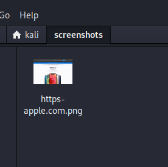

gowitness already installed
we find list of machines that are alive so we ll go to all thsose diff addresses and we ll take its ss
can run through whole list of subdomains

thus could directly look at pics